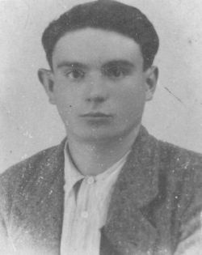
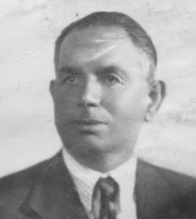

Quercegrossa (Ricordi e memorie)
CAPITOLO II - FAMIGLIE DEL '900
Indice dei Capitoli
Indice Famiglie del '900
FLORINDI (1925-1962) mezzadri; Castagnoli/Passeggeri/Magione; da S. Fedele.
“Partiti il 3 marzo 1925”, annota a margine della famiglia Florindi il parroco di
S. Fedele. Si mossero, infatti, dal podere Liverano del popolo di S. Fedele nel Comune di Radda per Castagnoli e sostituirono i Barbucci mandati a Monastero. I Florindi sono una famiglia di coloni composta di dodici persone che prendono possesso delle sei stanze del podere. A capo c’è Florindo, il fondatore indiscusso della famiglia essendo uno degli orfani dell'Ospedale di Siena. Figlio di ignoti, è nato il 15 maggio 1874, e introdotto all'Ospedale il giorno successivo proveniente da Sovicille. Reca come segno di riconoscimento: "Con metà di un tondo di rame appeso a un cordoncino di cotone di diversi colori". Non sarà mai richiesto. Alcuni giorni dopo, il 23 maggio, è consegnato a Carolina di Angelo Stopponi, per l'allattamento. Ma non vi rimane perché all'età di 5 anni, il 15 agosto 1879, è dato a Giuseppe Pancreatici di Castello in Villa di Castelnuovo B.ga. Cresciuto senz’altro come garzone lo ritroviamo adulto a Liverano e si è gia formato la propria famiglia. Una numerosa famiglia di nove figli avuti dalla moglie Teresa Brogi, di due anni più vecchia, sposata da giovanissimo forse nel 1893, essendo la primogenita Pia nata il 15 marzo 1894. Dei nove figli soltanto quattro lo accompagneranno a Castagnoli. Degli altri sappiamo che Pia, e Andreina con Francesco Tazzoni di S. Polo nel 1923, si mariteranno e lasceranno Liverano; Giuseppe, Armando e Narcisa, nati tra il 1910 e il 1914, moriranno in età infantile. Tra coloro che non seguirono Florindo c'era anche un piccolo garzone dell'Ospedale, certo Giuseppe Pancreatici: morirà poco prima della partenza. La nascita di Livio e il suo battesimo alla Canonica a Cerreto potrebbe indicarci la precedente dimora di Florindo. La famiglia, già numerosa, sbocciò ancora a Castagnoli fino a raggiungere le diciassette unità nel 1938: nove uomini e otto donne. Si dice che fu grazie a tanta abbondanza che il senatore Sarrocchi ampliò l'abitazione di Castagnoli, costruendo la parte a Ovest oggi ben riconoscibile, e consentendo così ai Florindi di viverci da cristiani. Quattro i figli maschi di Florindo e di Teresa Brogi che arrivarono a Castagnoli: Nello (1897), Livio (1903), Quintilio (1906) e Narciso (1908). Tutti coniugati, ma il solo Quintilio, sposato ad Assunta Campolmi, non ha eredi. Oltre ai figli di Livio nascono in quegli anni Giulia (1923) a S. Fedele, Duilio (1927) e Narcisa (1931) a Castagnoli, di Nello, e Mario (1938) di Narciso. Il secondo conflitto bellico porta alla mobilitazione generale e si dice che il Senatore abbia convinto Livio ad arruolarsi nei carabinieri pur essendo in età di 40 anni. Il "poro" Livio sarà uno dei caduti del popolo di Quercegrossa nella Seconda guerra mondiale, e si dice anche che il Senatore, per riparare in parte al grave lutto, abbia chiamato la vedova Ginetta Porciatti con i figli Pasquale, Ilario e Anna, ad abitare nella fattoria di Passeggeri nell'intento di offrirgli una migliore occupazione e sicurezza. Il nascituro figlio di Narciso e Assunta Peccianti, battezzato il primo febbraio del 1948 al fonte battesimale di Quercegrossa, sarà chiamato Livio in ricordo dello zio. In quello stesso anno 1948, il 24 marzo, muore anche Nello sposato a Isola Becatti. Gli anziani genitori lasciarono questa terra nel 1949 Teresa, e nel 1955 Florindo; quest'ultimo quando già la famiglia si è spostata a Passeggeri (1954). Narcisa di Nello sposò nel 1957 certo Arturo Rabissi e partì. Ormai critica la situazione della fattoria di Passeggeri, nel 1959 i Florindi, rimasti in sette, si allontanarono portandosi alla Magione per gli ultimo tre anni di colonato come mezzadri. Narciso con Assunta e i figli Mario e Livio, Quintilio con la moglie e il nipote Duilio di Nello, furono gli ultimi esponenti di questa famiglia che nel 1962, come molte altre abbandonarono i campi, e tornarono a Montenero delle Badesse. Qui si adatteranno a nuove occupazioni: Narciso lavorerà alla costruzione della superstrada Firenze-Siena; Mario già dal 1959, dai tempi della Magione, fa l’operaio e Livio inizierà nel 1963 come meccanico il suo apprendistato. Oggi abitano a Siena.
FONTANA (1914-1940); fornaciai; Quercegrossa.

Giotto Fontana, personaggio rinomato nella Quercegrossa fra le due guerre, è ricordato per la sua grande attività lavorativa come fornaciaio e costruttore, ma soprattutto per le sue brusche maniere e per le sfortunate vicende familiari. Appartenente a una famiglia di fornaciai che fece la sua apparizione a Riccieri di S. Leonino nel 1900/01, Giotto era nato nella Parrocchia di S. Cristoforo a Strada, comune di Greve, il 21 novembre 1888, ma battezzato nella parrocchia di S. Stefano a Tizzano, comune di Bagno a Ripoli, con i nomi Arnolfo e Giotto. Successivamente, sempre nella chiesa dell'Impruneta, è cresimato il 21 ottobre 1896 e dopo circa quattro anni la famiglia si trasferisce a S. Leonino. Il capofamiglia Giuseppe del fu Emilio e della fu Teresa Volta si era sposato con Eugenia Biagi che, come risulta a Riccieri nel 1906, gli ha partorito sette figli: due maschi, Giotto di 19 anni ed Emilio di 12, e cinque femmine: Norma la maggiore di 21 anni, poi Ada di 13, Elena di 6, Amelia di 2 ed Ereina di un anno. Vive con loro un garzone dell'ospedale certo Carlo Bovini di 25 anni. La loro attività professionale li portò quindi dalle nostre parti per gestire la fornace posta nei campi di Pomona e altre ancora. Nel successivo anno 1907 la famiglia cambiò residenza e si trasferì a Pievasciata nel luogo detto Fornacino dove iniziarono a lavorare in quelle fornaci, mantenendo però anche quella di Riccieri. Giotto, infatti, continuò a frequentare anche Quercegrossa e il 18 febbraio 1914 sposava nella nostra chiesa Alessandrina Ticci della nota famiglia proprietaria di Quercegrossa. La famiglia Fontana a Pievasciata, oltre al matrimonio di Giotto, visse alcune vicende familiari e non tutte felici. Nel 1915, il 29 aprile sposarono le sorelle Ada, col costruttore di Panzano Giuseppe Bucciarelli, e Norma col fornaciaio Santi Manganelli. Ma ecco che il 29 novembre 1917 Elena muore all’età di 16 anni e due anni dopo è Norma che a 33 anni chiude la sua esistenza terrena e il parroco annota: “Era stata maestra qui”. Infine, l’ultimo dato conosciuto delle sorelle di Giotto ci viene dal matrimonio di Amelia con Dino Fontani “scalpellino di Vagliagli”.

Nella foto Giotto ripreso in età giovanile e nella sua vecchiaia.
Al matrimonio di Giotto fece seguito la nascita di Lea a Quercegrossa il 29 novembre 1914, di Lia il 26 novembre 1915 e infine di Dino il 2 agosto 1918. Tre furono i figli che egli ebbe da Alessandrina, la quale visse ancora un decennio per morire il 6 gennaio 1929 alla giovane età di 37 anni. Anche i suoi figli ebbero vita breve e sofferta e uno dietro l’altro, tra il 1935 e il 1940, raggiunsero la mamma, lasciando Giotto solo. Lea morì il 24 aprile 1936 all'età di 22 anni, poi Lia, deceduta nel sanatorio di S. Gimignano, e infine Dino, morto anche lui a 22 anni il 7 agosto 1940.
In questi anni così segnati dal destino, Giotto decise di riprender moglie e si sposò a Siena il 7 novembre 1937 nella chiesa di S. Cristoforo con Ida Vanni. Ma anche questo secondo matrimonio finì presto perché Ida morì dopo due anni o poco più l’8 maggio 1940, dopo avergli dato un figlio chiamato Pierugo. In età di 53 anni Giotto si sposò per la terza volta, ancora a Siena dove si era trasferito in S. Giovanni, con la 36enne casalinga Adelina Gradi ed ebbe ancora un figlio, battezzato Dino, che oggi vive in Siena, titolare di uno studio professionale. La vicenda di Giotto a Quercegrossa si chiuse nel 1942 quando cedette le sue proprietà e prese definitiva dimora in Via dei Pellegrini, esercitando ancora per alcuni anni la sua professione di fornaciaio e commerciante. Morì quasi 90enne a Siena. La sua famiglia natale rimase a Pievasciata fino al 1925, poi si trasferì a Castellina in Chianti dove i Fontana continuarono la professione paterna fino ai tempi nostri.
Lia Fontana, figlia di Giotto.
FONTANI (1960 - ?); mezzadri; Belvederino.
Partiti i Fosi da Belvederino, intorno al 1960 vi viene registrata la famiglia Fontani. E' tutto quello che ci rimane, il cognome.
FONTANI EUGENIO (1921-1923); braccianti; Castellare;
da Castellina in Chianti.
Due anni soltanto a Quercegrossa per l’operante vedovo Eugenio Fontani e i suoi tre figli: Pietro e Giuseppe, braccianti, e Dina, atta a casa. Arrivò al Castellare il 26 febbraio 1921 dal Comune di Castellina e ripartì per Radda il 25 marzo 1923 senza la moglie Vittoria Fattorini deceduta al Castellare il 22 febbraio 1922 e sepolta a Castellina in Chianti. Eugenio apparteneva probabilmente ai Fontani di S. Fedele dove era nato nel 1880, figlio di Lorenzo e Serafina Rustioni.
FONTANI GIOVANNI (1910-1915); casieri; Castello.
Bracciante e casiere al Castello dal 1910, Giovanni Fontani fu Baldassarre venne da Siena insieme alla moglie Carlotta dei Merlotti del Poggiolo. Vi rimase forse fino al 1914 o 1915 e partì dopo aver perso il 1 dicembre 1913 la moglie 52enne. Dovrebbe aver lasciato la pigione ai Bandini.
Inizio pagina
Indice famiglie del '900
Indice dei Capitoli
|